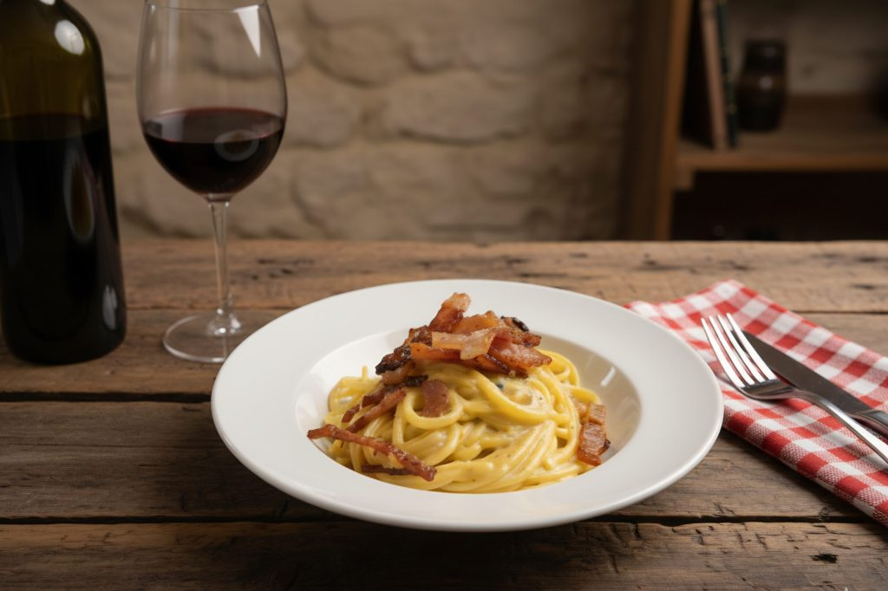

Recetas
Recetas
Pasta Carbonara

Ingredientes
- 400g de pasta
- 200g de bacon
- 3 huevos
- 100g de queso parmesano
- Sal y pimienta al gusto
Paso a Paso
- Cocina la pasta en agua con sal durante 8-10 minutos
- Corta el bacon en trozos pequeños y fríe en una sartén
- En un bol, bate los huevos con el queso parmesano rallado
- Cuando la pasta esté lista, escúrrela y mezcla con el bacon
- Retira del fuego y agrega la mezcla de huevo y queso
- Revuelve bien hasta que se incorpore todo
- Sirve caliente con pimienta negra al gusto
Volver al Inicio